This is the first public version. It runs on the author's own trading desk, but a first install by someone new on a clean PC is exactly what this release is for. If anything in this guide does not match what you see, please report it (see Troubleshooting).
How it works
- The feed guard (an add-on inside NinjaTrader) watches the market data of a few instruments you choose. When a connection drops it reconnects it; when the data goes silent while the market is open it re-subscribes, then disconnects and reconnects the connection serving it - but never while that account holds a position.
- The NT8 link (the second add-on) answers Guard's questions: which connections and strategies are on, and whether you are flat.
- The relauncher starts NinjaTrader within a minute when it is not running, and logs in with your saved password.
- The overwatch checks every minute that NinjaTrader is alive - its window answers, both add-ons report, prices arrive - and restarts it when it is not. After any restart it reconnects what was connected. It also saves every strategy's settings every 30 minutes.
- Strategy backups: NinjaTrader drops switched-off strategies from its Strategies list when it closes. Guard puts them back from those backups - on their charts - before it starts NinjaTrader again.
- Everything runs under your own Windows user as scheduled tasks: no administrator rights, nothing installed for other users. The control panel only shows and changes settings; closing it changes nothing.
Three ways to run it
Guard watches and tells you. It never starts, restarts or reconnects anything.
NinjaTrader, its connections and its strategies list come back. Switching strategies on stays with you.
Everything Recover does, plus switching strategies back on and closing an unprotected position first.
Requirements
| What | Notes |
|---|---|
| Windows 10 or 11 | Your normal user account. No administrator rights needed. |
| NinjaTrader 8.1 | Tested with 8.1.6.3 and 8.1.8.3. Older 8.1 versions should work (the wizard shows them amber); 8.0 is not supported. |
| Remember username | Tick it once in NinjaTrader's login window. Guard enters only the password. |
| A phone with ntfy | Optional but recommended: the free ntfy app (Android, iPhone) receives Guard's alerts. No account needed. |
| Being flat | Importing the add-ons makes NinjaTrader compile NinjaScript, which restarts running strategies. Do setup with no open position. |
Guard brings its own Python for the strategy backups (inside its folder; nothing is installed system-wide). You do not need Python.
If something else already restarts NinjaTrader on this PC (your own scripts, an older relauncher, cli-nt-bridge's watchdog), the wizard lists it in red and will not switch Guard on until you disable it: two watchdogs would each restart NinjaTrader and fight over it.
Install
Download
NT8Guard-v0.9.2.zip, right-click it and choose Extract All…. RunningInstall.cmdfrom inside the zip does not work (it says so).Double-click Install.cmd in the extracted folder. Windows may ask whether to run it, because it came from the internet: choose Run (or More info → Run anyway).
It copies Guard into
%LOCALAPPDATA%\NT8Guard, adds NT8 Guard to the Start menu, and opens the setup wizard. Nothing runs in the background yet: that starts at the wizard's last step.
NT8 Guard 0.9.2 app\ installed python\ installed the NinjaTrader add-ons zip and the guide copied Start menu: NT8 Guard Installed in C:\Users\someone\AppData\Local\NT8Guard Opening the setup wizard.
The setup wizard
Seven steps. Finish later keeps your place; the wizard reopens at the same step from the Start menu, and any step can be revisited later from Tools → Setup.
1 · Check this PC
Guard looks at NinjaTrader's version and folder, its own Python, display scaling, whether Windows signs in by itself after a restart, and whether another watchdog is already switched on. Red needs fixing before Guard can do its job; amber is worth knowing.
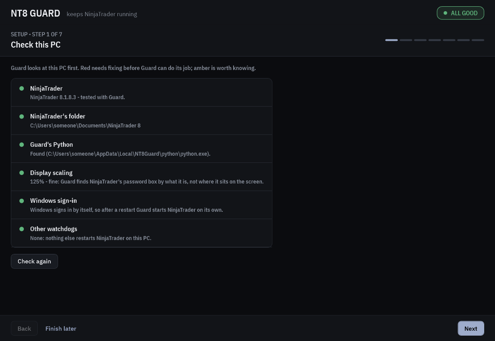
2 · NinjaTrader login
In NinjaTrader's login window, tick Remember username once.
Keep Guard's own login (recommended) - it finds the password box by what it is, not where it sits on the screen - or choose My own login program if you already use one, and press Save.
Type your NinjaTrader password and press Save password. It goes from the box straight into a file encrypted for this Windows user on this PC - never shown, never logged.
Optional: Test login closes NinjaTrader (only when you are flat), starts it and logs in the way Guard will after a crash.
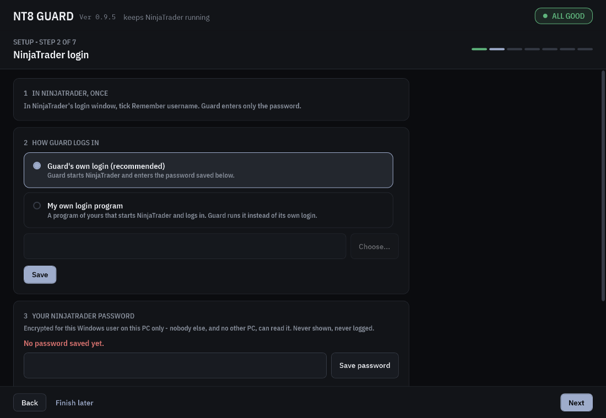
3 · NinjaTrader add-ons
Be flat. In NinjaTrader: Tools → Import → NinjaScript Add-On… and choose
NT8Guard-AddOns.zip(the wizard shows where it is, with Show the file and Copy its path).NinjaTrader compiles the two add-ons. Within a minute both lights turn green; Next waits for them.
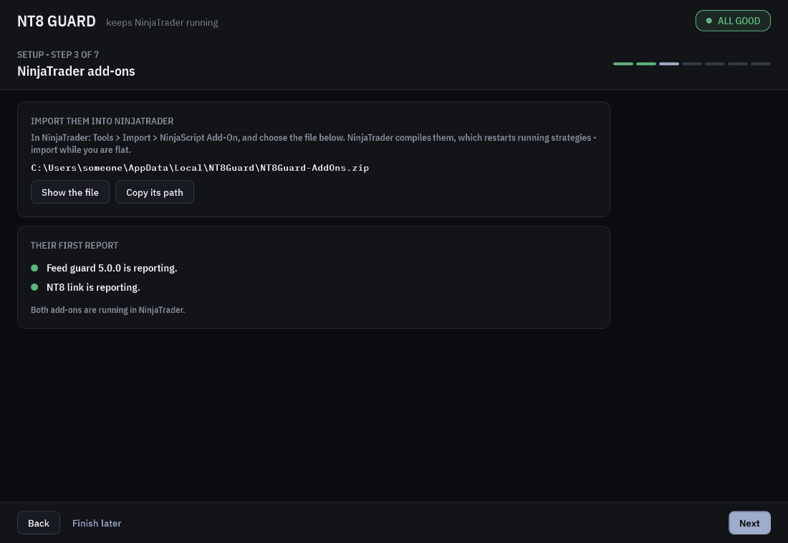
Already using cli-nt-bridge? Its NT8 link add-on is the same one; this import replaces it with the version Guard ships. A light that stays grey: open New → NinjaScript Editor and press F5, then check NinjaTrader's Log tab for a compile error.
4 · Watch list
The instruments the feed guard watches for live prices - by default ES ##-## and NQ ##-## (the ##-## follows NinjaTrader's own contract rollover). Pick instruments your data connection always streams - a silent one reads as a dead feed. Silent after is how long a silence counts as a dead feed while the market is open (75 seconds by default). CME holidays and early closes are built in; add your own closed days if you need them.
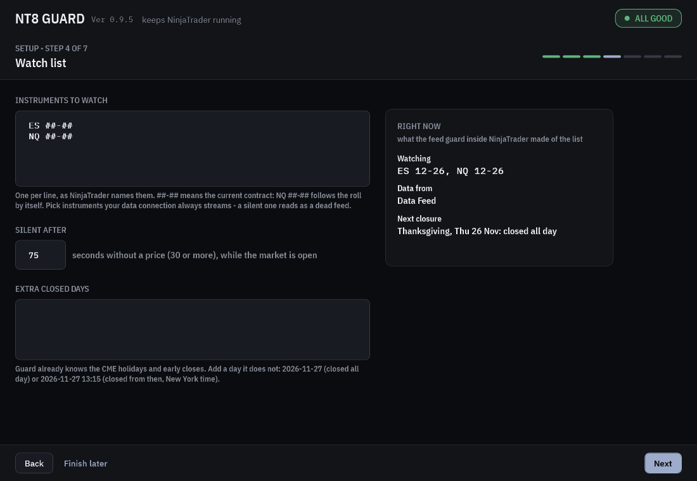
5 · Phone alerts
Install the ntfy app on your phone.
Guard already made a long random private topic for you. Press Show code and scan the QR code with the phone's camera or the ntfy app to subscribe (or Copy address and add it in the app).
Next saves it. The last step sends a test alert; Send a test on the Alerts tab or in Tools sends one any time.
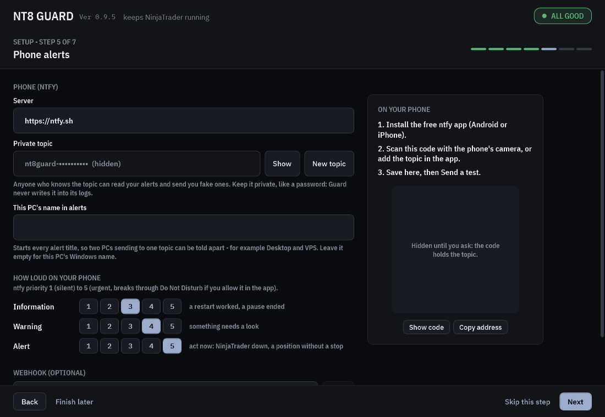
You can set how loud each kind of alert is (ntfy priority 1 to 5), or add a webhook of your own beside ntfy: Guard posts every alert to it as JSON (title, body, severity, host, time). Skip this step if you want to do it later.
6 · Protection
Choose a preset - Recover NT8 is the default - or switch single items. Off means Guard only alerts you.
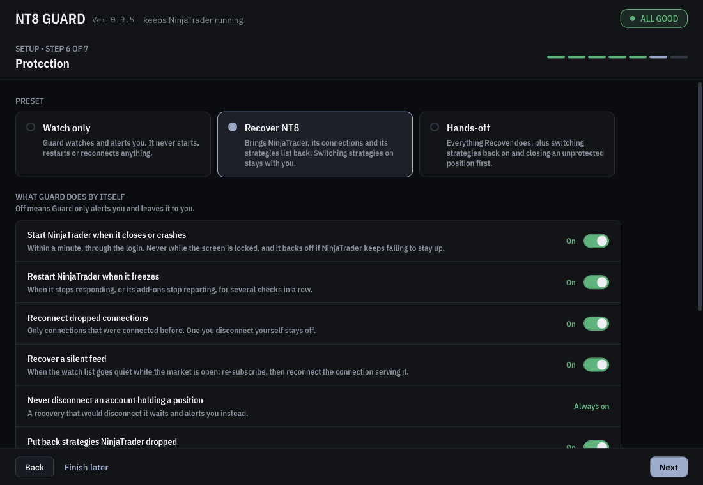
7 · Start Guard
Finish setup installs Guard's three scheduled tasks for your Windows user, runs each once and waits for it to report, then sends a test alert. From then on Guard watches NinjaTrader and starts it when it is down.
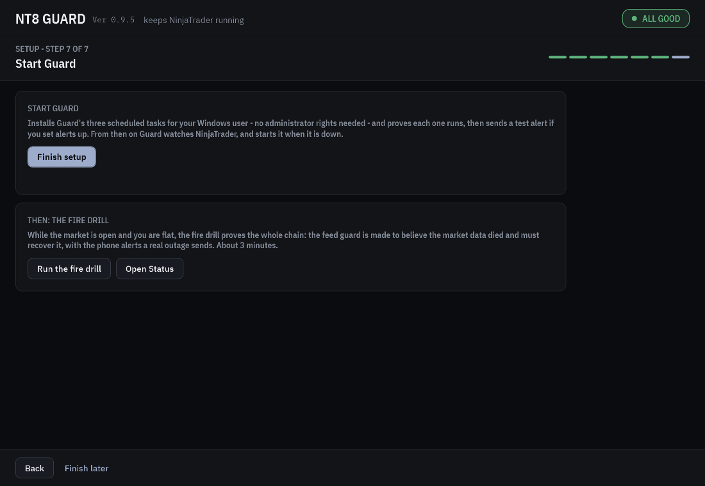
The fire drill
The drill proves the whole chain once, with your phone in the loop. For about three minutes the feed guard ignores the market data, exactly as if the feed had died. It should notice, re-subscribe, then disconnect and reconnect the connection serving your watch list - and your phone gets the alerts a real outage sends.
Be flat: the disconnect switches off the strategies on that connection, so Guard checks with the NT8 link first and refuses if you are not.
Run it while the market is open: Tools → Run the fire drill (or from the wizard's last step). The window lists each step as it happens.
Use NinjaTrader's Simulated Data Feed: it makes up prices around the clock, so the feed guard turns the market calendar off for it and the drill runs. It is not the connection called Simulation that newer NinjaTrader versions connect by default - that one streams real market data and keeps market hours.
- In NinjaTrader: Connections → Configure, add Simulated Data Feed from the list, OK.
- Disconnect Simulation and connect Simulated Data Feed, so it serves your watch list.
- Wait a few seconds (the feed guard looks every 10 seconds), then run the drill. Afterwards, switch back to your usual connection.
Strategies you switched off to be flat stay off afterwards; switch them back on yourself.
The control panel
Open it from the Start menu: NT8 Guard. It reads what the watchdogs and add-ons report every two seconds; closing it changes nothing.
Status
One card per piece - NinjaTrader, its market data, the auto-login, the watchdogs, the two add-ons, the strategy backups, phone alerts - green, amber or red, with what to do about anything not green. Recent events below, in plain sentences. Pause Guard is at the top right.
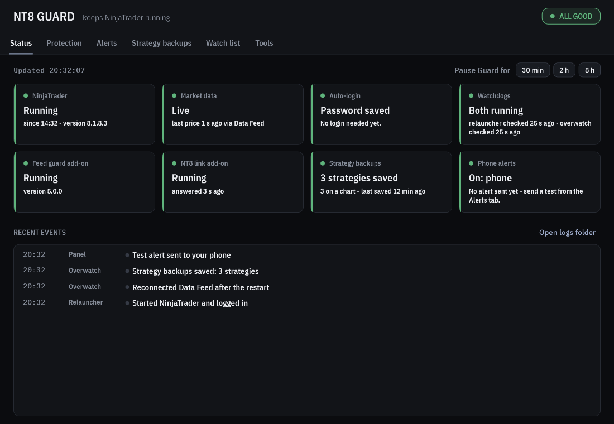
Protection
| Switch | Watch only | Recover NT8 | Hands-off |
|---|---|---|---|
| Start NinjaTrader when it closes or crashes | alert | on | on |
| Restart NinjaTrader when it freezes | alert | on | on |
| Reconnect dropped connections | alert | on | on |
| Recover a silent feed | alert | on | on |
| Never disconnect an account holding a position | always on | ||
| Put back strategies NinjaTrader dropped, on their charts | alert | on | on |
| Switch strategies back on | alert | alert | on |
| Close an unprotected position first | alert | alert | on |
| Save a crash report when NinjaTrader freezes | off by default (3 to 6 GB each) | ||
Switching strategies back on is an alert by default: an alert tells you, per strategy, whether its account has no position, a protected one or an unprotected one, so the decision stays yours.
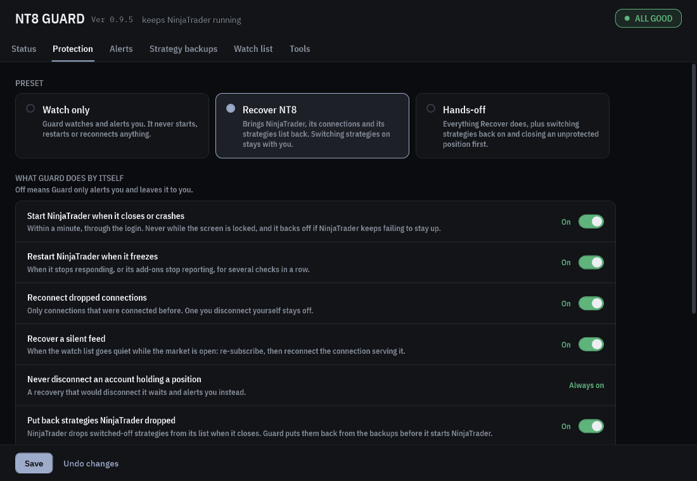
Alerts
The ntfy server (https://ntfy.sh unless you run your own), your private topic and its QR code (New topic makes a fresh one), how loud each kind of alert is, an optional webhook, and Send a test.
This PC's name in alerts starts every alert title, [VPS] NT8 is DOWN. When two PCs send to one topic, give each its own name - Desktop and VPS, say - so the phone tells you which one it is. Empty means the Windows computer name.
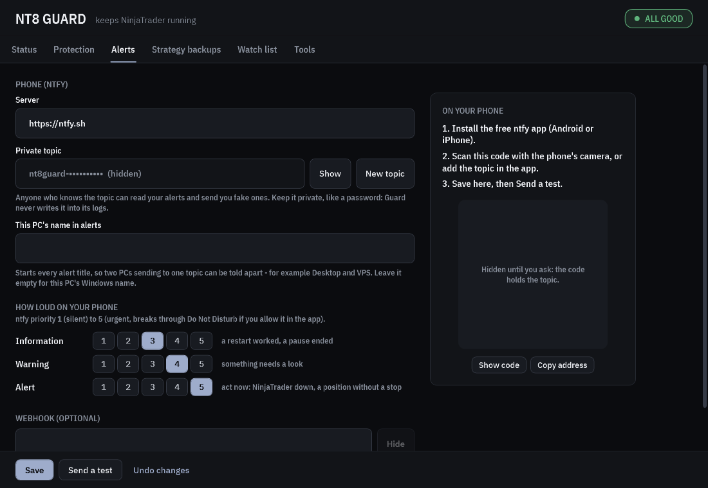
Strategy backups
Every strategy Guard has saved: account, instrument, the chart it sits on, when it was saved, and its state - on the list, missing (dropped across a restart; put back automatically at the next start, or now with Put back now), or removed by you (Bring back or Forget).
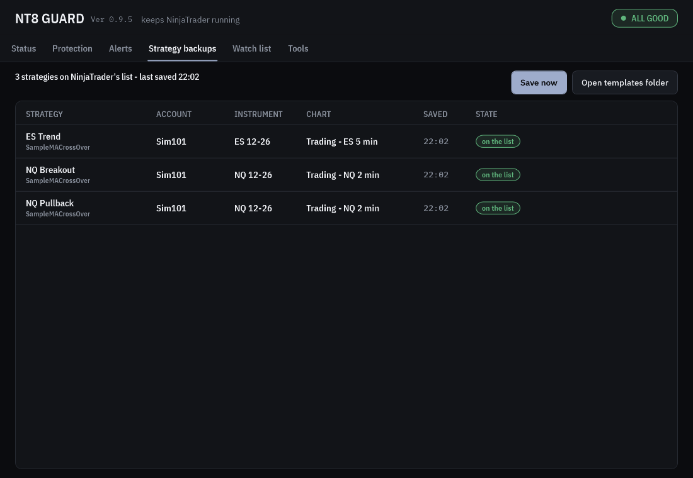
Abruptly, on purpose: a normal close drops switched-off strategies from the list - the very thing it repairs. Guard checks you are flat first. Save your workspace in NinjaTrader before, if you changed charts since it started.
Watch list
The instruments, the stale time and extra closed days - and what the feed guard made of them right now.
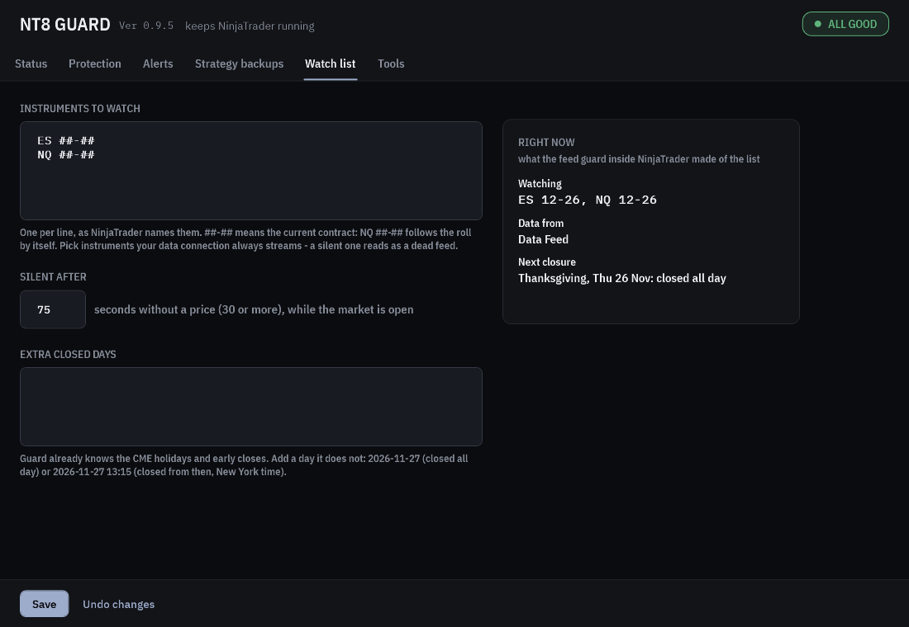
Tools
Test alert, pause, Test login, the fire drill, a diagnostics zip for a bug report (alert address, Windows user name and PC name masked; no password or strategy settings), Guard's and NinjaTrader's folders, the setup pages, and Uninstall.
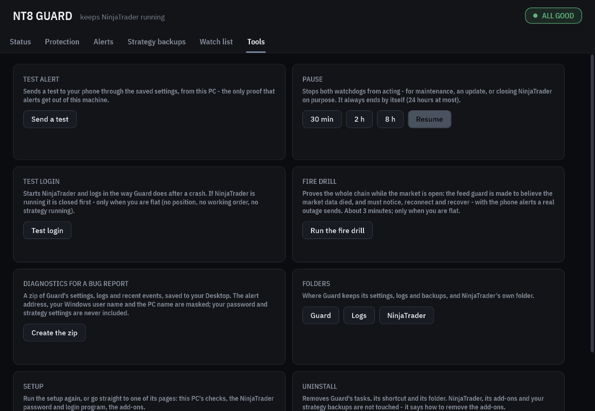
What happens when…
| Event | What Guard does (Recover NT8) |
|---|---|
| NinjaTrader crashes or is closed | The relauncher puts back any strategies NinjaTrader dropped (on their charts), starts it and logs in - within about a minute. After the start the overwatch reconnects the connections that were connected before, one at a time. |
| NinjaTrader freezes | Proven over three checks a minute apart (window not answering and an add-on stopped), then restarted. A frozen window with both add-ons alive - usually you compiling a script - is only an alert. The Control Center is watched on its own (it can freeze while the charts keep working): frozen for three checks, an alert; still frozen after ten, a restart. |
| A connection drops | The feed guard reconnects it. One you disconnect yourself stays off. |
| Prices stop while the market is open | The feed guard re-subscribes; if prices stay silent it disconnects and reconnects the connection serving the watch list - unless that account holds a position (then it waits and alerts you). If that cannot fix it, the overwatch restarts NinjaTrader. |
| A strategy vanishes from the list | Lost across a restart: put back automatically before the next start, on its chart. Removed by you within one session: listed as removed by you - nothing happens unless you press Bring back. |
| Windows restarts (an update, a power cut) | Guard's tasks start when you sign in. If Windows signs in by itself, NinjaTrader is running a minute later; if it asks for a password, NinjaTrader starts once you sign in. |
| The PC sleeps | Everything stops, Guard included. On wake the feed guard sees the silent feed by the clock and recovers it. Keep the PC awake while you trade. |
| The screen is locked | Guard cannot type behind the lock screen: it waits and starts NinjaTrader within a minute of the unlock, and alerts you. |
| The login fails | Retried, with alerts. Two refusals of the password in a row stop the starts until you save it again or log in by hand once. Four starts in 30 minutes that do not stay up pause restarts for an hour, then longer. |
Each problem pages your phone once (again after 6 hours if it is still there), not every minute.
Pausing
Closing NinjaTrader on purpose - maintenance, an update, a reboot of your own? Pause first (Status or Tools: 30 min, 2 h or 8 h), or the relauncher starts it again within a minute. A pause always ends by itself (24 hours at most), and Resume ends it early.
Updating
Close the NT8 Guard window. Extract the new zip and run its Install.cmd.
Your settings, saved password, logs and strategy backups are kept; the program is swapped in whole, so a task never starts a half-copied program.
If the release has newer add-ons, Status says so: import the new
NT8Guard-AddOns.zipin NinjaTrader, while flat.
Uninstalling
Tools → Uninstall removes Guard's three tasks, the Start-menu shortcut and - once the window closes - Guard's folder (settings, saved password, logs, the backups list).
NinjaTrader is not touched. The two add-ons stay until you delete them in NinjaTrader's NinjaScript Editor (AddOns folder: AutoReconnect, NT8BridgeServer and NT8BridgeServerPlayback - keep the last two if another tool uses the NT8 link), while flat. The strategy backup templates (templates\Strategy\…\Guard backup - *.xml) are yours to keep or delete.
Troubleshooting
| You see | Do this |
|---|---|
| Install.cmd: "cannot find the app folder" | Extract the whole zip first (right-click → Extract All), then run Install.cmd from the extracted folder. |
| Install.cmd: "Close the NT8 Guard window first" | Close the control panel and run it again. |
| Install.cmd: "running scripts is disabled" or "is not digitally signed" | Your organisation sets this PC's PowerShell execution policy (Group Policy). Install.cmd already removes the download mark from its own files, which is enough for the usual policy; one that allows only signed scripts needs whoever manages the PC - or a PC you manage yourself. |
| Step 1: Guard's Python is red | Run Install.cmd again from the extracted zip. |
| Step 1: Other watchdogs is red | Disable the task it names in Task Scheduler (right-click → Disable), or close the program it names, then press Check again. |
| Step 3: a light stays grey | The import must compile: open New → NinjaScript Editor, press F5, and read NinjaTrader's Log tab for an error. |
| Feed guard "older than this Guard expects" | Import the NT8Guard-AddOns.zip that came with this version. |
| NinjaTrader stays at its login window | Tick Remember username in it once; save the password again (Tools → NinjaTrader login); then Test login. |
| "The saved password was refused twice" | Guard stopped trying so your broker does not lock the account. Save the right password, or log in by hand once. |
| No alerts on the phone | Alerts → Send a test. The ntfy app must be subscribed to exactly the same topic, with notifications allowed. |
| Fire drill: "the market is closed" | Run it while the market is open, or on NinjaTrader's Simulated Data Feed - not the Simulation connection, which keeps market hours (see the fire drill). |
| Fire drill / Put back: "can't confirm you're flat" | The NT8 link did not answer or answered something it could not mean. Wait a minute after NinjaTrader starts; check the NT8 link card on Status. |
| NinjaTrader restarted and you do not know why | Status → Recent events says why; Tools → Logs has the detail. |
For a bug report, attach Tools → Diagnostics zip (secrets masked) to an issue on the project's GitHub page (cli-nt-bridge).
Known limits
- A locked screen holds the login until you unlock (Windows does not let a program type into a window behind the lock screen).
- Guard runs while you are signed in to Windows - so does NinjaTrader. A Windows that asks for a password at startup starts NinjaTrader after you sign in.
- Sleep stops everything. Keep the PC awake while you trade.
- One NinjaTrader per Windows user.
- Tested NinjaTrader versions: 8.1.6.3 and 8.1.8.3. Parts of Guard read NinjaTrader's internals; each one checks itself and turns into an alert if a future version moves it.
- A strategy you remove within one NinjaTrader session is never put back by itself; one lost across a restart is.
Privacy
- Nothing is sent anywhere except the alerts you set up: to the ntfy server (and your webhook, if any). No telemetry.
- Your topic is the key to your alerts. Anyone who knows it can read them. Guard makes a long random one; keep it private, or run your own ntfy server.
- Your NinjaTrader password is encrypted with Windows' own protection for your user on this PC; another user, or another PC, cannot read the file.
- The diagnostics zip masks the alert address, your Windows user name and the PC name, and leaves out the password and strategy settings.
Files & settings
| Where | What |
|---|---|
%LOCALAPPDATA%\NT8Guard\ | Everything of Guard's: guard.json (settings), secrets\ (the encrypted password), state\, events\, logs\ (rotated at 5 MB; NinjaTrader's own logs archived for 7 days in logs\nt8\), app\ and python\ (the program). |
| NinjaTrader's folder | The two add-ons (bin\Custom\AddOns\), the feed guard's settings and reports (AutoReconnect.*), the NT8 link's request folder (NT8Bridge\), and the strategy backup templates (templates\Strategy\…\Guard backup - *.xml). |
| Task Scheduler | NT8Guard-Relaunch and NT8Guard-Overwatch (every minute), NT8Guard-LogArchive (every 10 minutes) - for your user only. |
Every setting has a default and the control panel writes them all; app\README.md lists each one for anyone who prefers a text editor.
NT8 Guard is open source (MIT). It is not made, endorsed or supported by NinjaTrader, LLC.